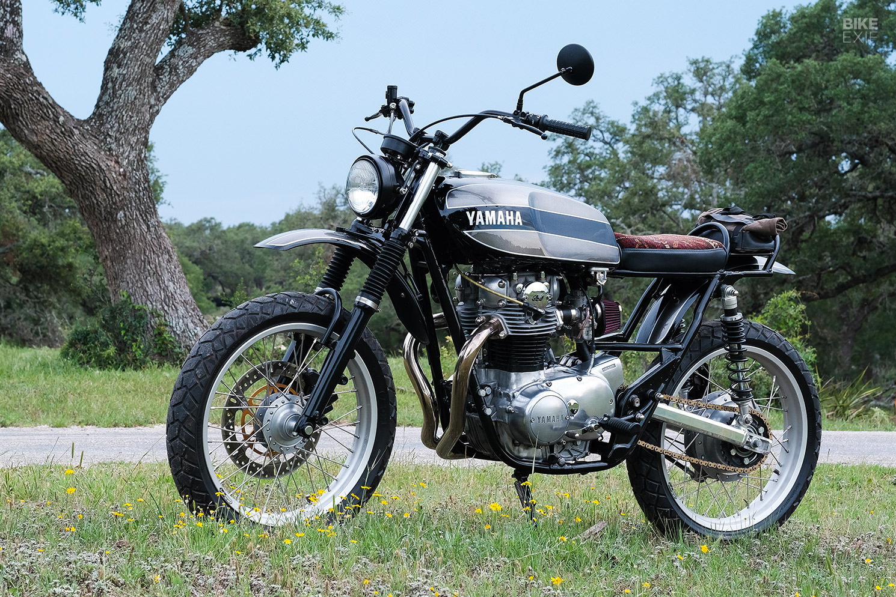

The Yamaha XS Scrambler represents a thrilling fusion of vintage style and modern performance, taking inspiration from the iconic scrambler motorcycles of the past while incorporating Yamaha's legendary engineering expertise. With its rugged yet refined appearance, the XS Scrambler boasts classic scrambler elements such as high-mounted exhaust pipes, knobby tires, and a raised ride height, giving it a purposeful and adventurous look. Its minimalist design, stripped-down bodywork, and exposed mechanical components pay homage to the scramblers of yesteryear while retaining a distinctively contemporary flair.
Beneath its retro exterior lies a potent engine, typically a torquey and responsive inline-twin or parallel-twin powerplant, delivering ample performance both on and off the road. Whether navigating city streets, carving through winding backroads, or tackling rough terrain, the XS Scrambler offers a thrilling and versatile riding experience that appeals to both seasoned riders and newcomers alike. Despite its rugged appearance, the XS Scrambler doesn't sacrifice comfort or practicality. With a comfortable riding position, intuitive controls, and modern amenities such as LED lighting and digital instrumentation, it strikes a perfect balance between form and function, making it equally suitable for daily commuting or weekend adventures.
As a symbol of freedom, exploration, and individuality, the Yamaha XS Scrambler embodies the spirit of adventure and captures the imagination of riders who crave excitement and authenticity in their motorcycle experience. With its timeless style, exhilarating performance, and unparalleled versatility, the XS Scrambler is more than just a motorcycle—it's a lifestyle statement.